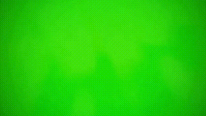

Diamondhead
Al ser una forma de vida basada en silicio, el cuerpo de Diamondhead esta compuesto enteramente de cristales de aguamarina, que son de una sustancia muy dura y duradera similar al diamante. Tiene cuatro fragmentos de cristal en la espalda y una cabeza afilada
En la Serie Original , Diamondhead tenia los ojos amarillos y vestía un uniforme sin mangas que era negro en la mitad derecha y blanco en la izquierda, con un parche negro en el hombro izquierdo donde se encontraba el simbolo original del Omnitrix .
}Diamondhead, de 11 años, luce casi igual que en la Serie Original , pero le falta el parche negro alrededor del símbolo del Omnitrix en el lado izquierdo de su traje, y los cristales de su espalda, as como su mandíbula, son mas grandes. Sus ojos son verdes y el Omnitrix tiene un color diferente.
En Omniverse , Diamondhead lleva ropa sin mangas completamente negra con una gran franja verde en el centro que llega hasta su cinturon, y pantalones negros. Tiene un cinturon verde con franjas blancas en el que luce el simbolo del Omnitrix . Diamondhead ya no tiene los cristales en el pecho, y los cristales de su espalda tambien han aumentado de tamaño. Su mandibula es mas grande, usa zapatos negros con la suela verde, y ahora solo tiene dos fragmentos de cristal en la espalda.